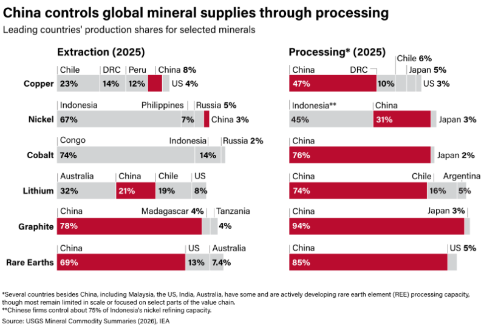
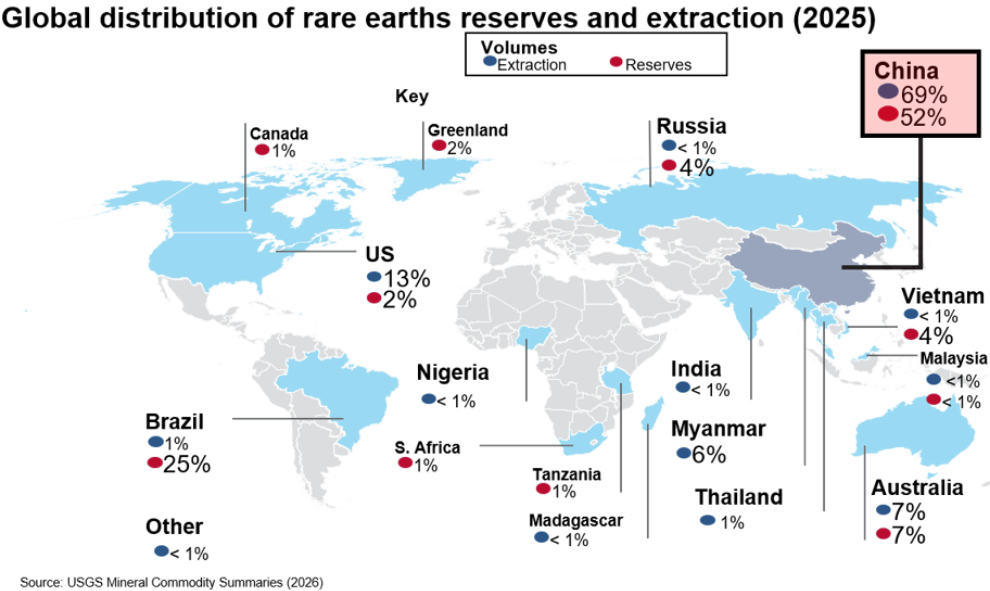
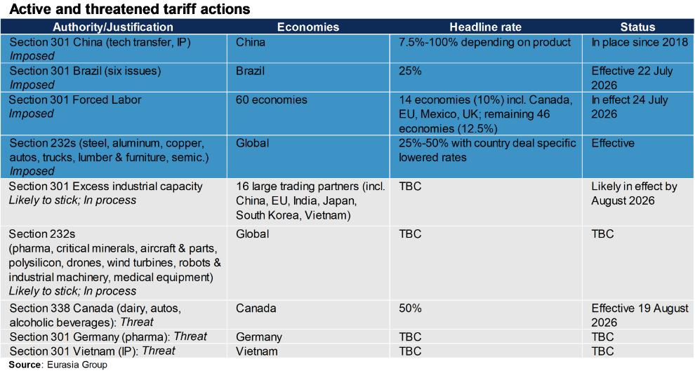
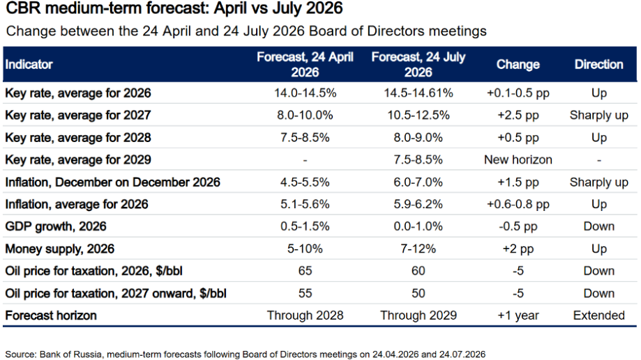
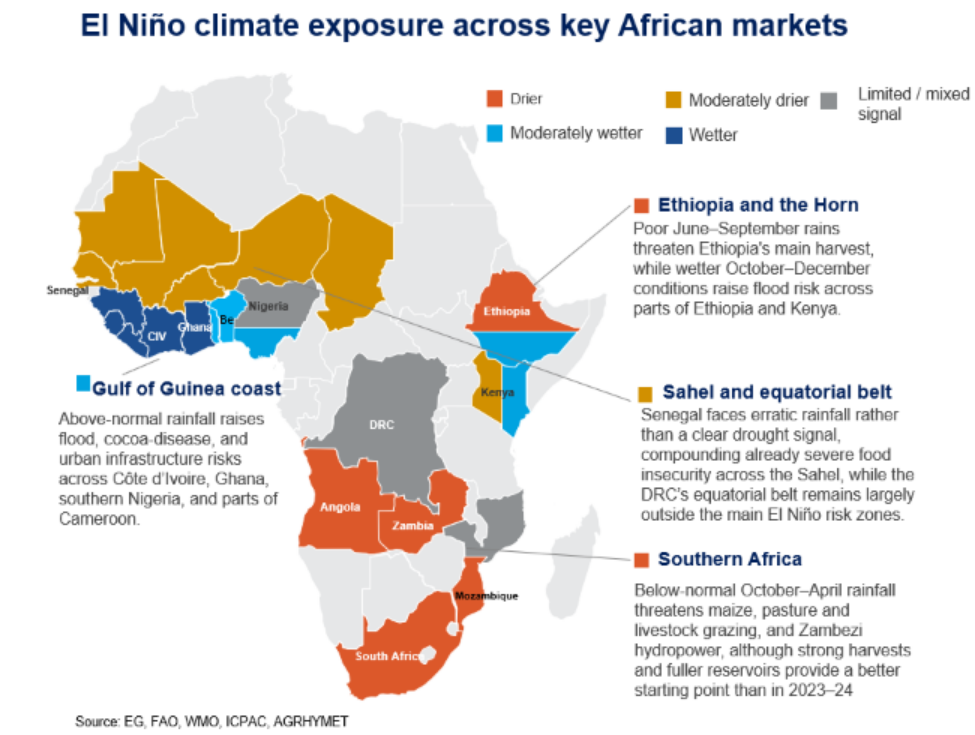

|
27 Jul 2026 08:11 EDT |
||
|
|||
|
|||
summary
|
|||
the top lineChina, EU—Beijing’s rare earth warning shot expands use of export control leverage

Conference call notes: China, the middle powers, and the global minerals race

Ian Bremmer on Iran
US, Trade—Separating signal from noise in Trump’s latest tariff rollout

Russia—Politicized rate cut shows Kremlin’s mounting concerns over war financing

Africa, El Niño—Countries are generally better prepared for El Niño this year

Upcoming conference calls |
||
eg in depthUK, Geo-technology—Eliminating science and technology department jeopardizes London’s third-way tech and AI approach: Prime Minister Andy Burnham’s decision to dissolve the Department for Science, Innovation and Technology (DSIT) risks weakening the UK’s leadership position on tech and AI policy, though a new AI Minister Kanishka Narayan will attend cabinet meetings, and a new AI taskforce will operate within a strengthened Number 10. Critics fear the move could signal a retreat from the UK’s “third way” between the US and EU policy approaches and deprioritize the UK’s innovation agenda. Unlike his immediate predecessors, Burnham risks viewing AI largely through the lens of social and labor concerns, which could weaken the pro-innovation posture that has helped the country become an emerging hub for AI development. Read more here. Reach out to discuss: europe@eurasiagroup.net.
Latin America—Conference call notes: Latin America’s resource-rich asset base—energy, mining, agriculture, and clean energy—positions the region well in a fragmented world order and with an improved policy outlook. Trump will continue to prioritize the region, including a stable Venezuela, while relations with Mexico are becoming more strained over security but remain within certain guardrails. Conservative victories in Chile, Peru, and Colombia create moderate policy upside, though Colombia will face greater challenges because of a significant fiscal gap, while incumbents in Argentina and Brazil remain relatively strong and are modest favorites for reelection. Read more here. Reach out to discuss: latinamerica@eurasiagroup.net.
Brazil—Conference call notes: A conversation with Daniela Marques: Marques, economic policy coordinator for Senator Flavio Bolsonaro's campaign, outlined a three-pillar agenda that includes fiscal consolidation, growth-enabling reform, and a popular capitalism program to promote social mobility through digital infrastructure. The campaign's fiscal anchor is a constitutional amendment to reduce the primary deficit immediately, backed by a new fiscal governance council spanning all three branches of government. Marques described Brazil's fiscal crisis as a governance failure across all three branches, arguing that, without structural reform to who controls spending, no finance minister can execute an adjustment. Read more here. Reach out to discuss: brazilresearch@eurasiagroup.net.
Upcoming events:
The EG Daily Brief is compiled by Jens Larsen, Lucy Eve, Babak Minovi, Pietro Guglielmi, Rahul Bhatia, Marilia Sirio, Joseph Craven, Martina Silva, and Trista Kelley, with help from Marina Tavares, and Astral Betteridge. |
||
 |
closing quipWhy is 'European duck' so afraid of 'Peking duck'? Instead of devising ever more trade barriers, this is the question the EU should seriously confront... The problem lies with 'European duck' itself. High energy costs and fragile supply chains, among other factors, have eroded its competitiveness."—China's Global Times 10 July editorial, on the EU's own high energy costs and fragile supply chains, not Chinese subsidies, being the real threat to Europe. |
||
 |
|||